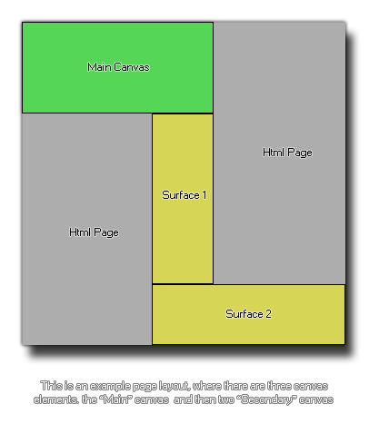

Sintaxis:
surface_create_ext(name, w, h);
Argumento Descripción name El nombre del elemento canvas para unir la superficie a. w El ancho de la superficie que se creará h La altura de la superficie que se creará.
Devoluciones:
Real
Descripción
Esta función le permite adjuntar una superficie a un elemento de lienzo que ya existe en su página web, lo que significa que puede dividir con eficacia porciones de su juego que se dibujarán en diferentes lugares de la página. Para ello, debe haber definido correctamente el elemento canvas en el *.html página de su juego usando los tamaños correctos y los nombres que corresponden a las superficies que desea crear. Por lo tanto, tendría su lienzo "principal" y luego sus elementos de lienzo de superficie secundaria, que se le asignarán utilizando esta función a las superficies correctas. La siguiente imagen es un ejemplo de cómo se configuraría una página con tres elementos de lienzo: 
El diseño de la página puede ser complicado, especialmente si desea que todos los elementos se alineen correctamente, pero una vez que se haya completado la difícil tarea de crear el diseño, puede agregar este html archivo como el archivo de página predeterminado para el juego usando la pestaña HTML5 de las opciones del juego. Lo siguiente que debes hacer es configurar tu sala y tus vistas, ya que cada superficie deberá estar asociada a una vista específica para "capturar" las imágenes del juego (ver la variable de vista view_surface_id[0...7] ) La imagen a continuación muestra cómo se establecería la sala de juegos para el ejemplo del lienzo anterior:
Finalmente, usted usaría esta función para crear las superficies, con el mismo nombre que el usado para los elementos del lienzo y el tamaño correspondiente al tamaño del mismo lienzo. La función devolverá el índice de la superficie que debe almacenarse en una variable para futuras llamadas a funciones. Cuando se crea la superficie por primera vez, puede contener "ruido" ya que básicamente es solo un área de memoria que se deja de lado para ese propósito (y esa memoria puede contener información), por lo que es posible que desee despejar la superficie antes de usarla. una función como draw_clear_alpha.
NOTA: Esta función solo está disponible para su uso con el módulo HTML5.

Ejemplo:
s1 = surface_create_ext("surface1", 192, 550);
s2 = surface_create_ext("surface2", 608, 186);
view_surface_id[1] = s1;
view_surface_id[2] = s2;
El código anterior crea dos superficies de diferentes tamaños, asignando cada una a un elemento de lienzo diferente, y luego esas superficies se asignan a dos vistas para que se capture la parte correcta de la sala.